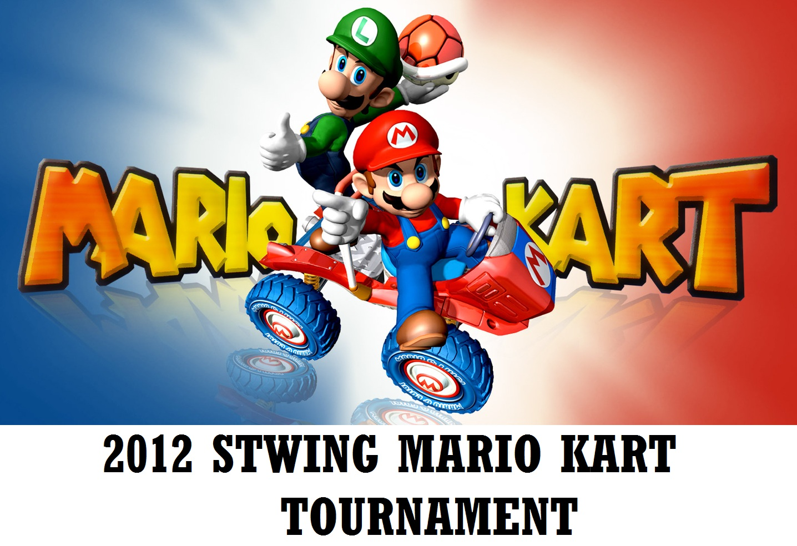

Welcome to the webpage for the 2012 STWing Mario Kart Tournament! To navigate this website, use the tabs at the top of the page.
Please complete the above form and hit submit if you plan on participating in the Mario Kart tournament.
On the day of the tournament, please arrive before 7:15pm to check in for the tournament to verify you are here. You may
also sign up at this time if you haven't already. Matches are expected to start at 7:30pm, so if you haven't signed up and checked in by then, you will be unable to do so once matches start.
Feel free to send any questions to
kevinxu@stwing.upenn.edu.
Please complete the above form and hit submit if you are willing to lend equipment for the tourney. We need as much extra equipment as possible! :)
We are looking for anyone that is willing to lend TVs, Nintendo Gamecubes/Wiis, Wiimotes, Gamecube Controllers, and copies of Mario Kart Double Dash.
Please bring your equipment on the day of the tournament sometime between 6-6:50pm to the 1938 lounge, and we will tag your equipment before setting it up.
When you need to leave, please see me and let me know that you are leaving (and remember to take your equipment with you).
Feel free to send any questions to
kevinxu@stwing.upenn.edu.
Kings Court English College House (KCECH) is an undergraduate dormitory on the campus of the University of Pennsylvania. It's address is 3465 Sansom St,
Philadelphia PA, 19104.
The entrance is between 36th and 34th Street on Sansom, and it is closer to 36th than it is to 34th.
Since it is a Penn dorm, non-resident Penn students need their Penn Cards to gain access to the building. Non-resident Penn students without a Penn Card
and non-Penn students need a photo ID and must be signed in by a resident to gain access to the building.
Once you are in the building, walk down the hall, up the stairs, make a right, and you should see the 1938 Lounge up ahead (it has a large glass wall).
View On Google Maps